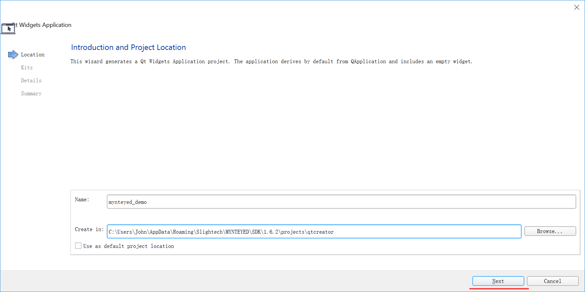
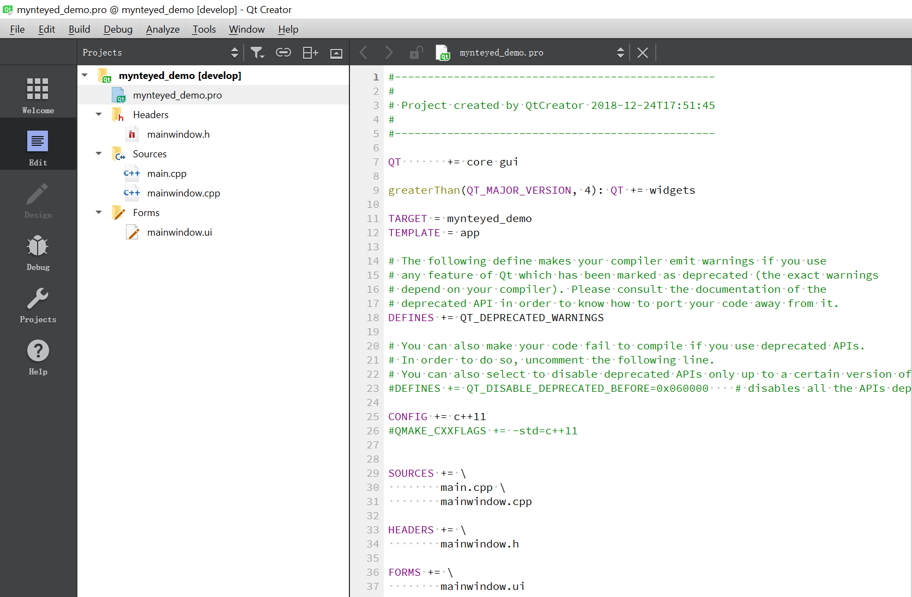

MYNT® EYE D SDK¶
产品¶
简介¶
作为基于视觉识别技术的3D传感器，小觅双目摄像头深度版可适用于室内外双重环境。无惧室外强光环境，完全黑暗的室内环境亦可工作。标配的IR主动光，可以完美解决了室内白墙和无纹理物体的识别难题。“双目+IMU”的惯性导航方案，可为VSLAM的应用提供精准的六轴互补数据，并且相较其他单一方案拥有更高精度和鲁棒性。此外，小觅双目摄像头深度版产品（MYNT EYE Depth）还提供丰富的SDK接口和VSLAM开源项目支持，可以帮助客户迅速进行方案集成，加速实现产品研发进程，实现方案的快速产品化和落地。
小觅双目摄像头深度版（MYNT EYE Depth）可广泛应用于视觉定位导航（vSLAM）领域，包括：无人车和机器人的视觉实时定位导航系统、无人机视觉定位系统、无人驾驶避障导航系统、增强现实（AR）、虚拟现实（VR）等；双目也可应用于视觉识别领域，包括：立体人脸识别、三维物体识别、空间运动追踪、三维手势与体感识别等；应用于测量领域，包括：辅助驾驶系统（ADAS）、双目体积计算、工业视觉筛检等。
为保证摄像头产品输出数据质量，产品出厂时，我们已对双目以及IMU进行标定。同时，产品通过富士康实验室的高温高湿持续工作、高温高湿持续操作、低温动态老化、高温工作、低温存储、整机冷热冲击、正弦振动、随机振动等多项产品质量测试，保证品质的稳定和可靠。除了产品和技术的研发，亦可直接应用于产品量产，加速从研发到产品化的过程。
外观¶
D1000 尺寸与结构¶
外壳(mm) |
PCBA板(mm) |
|---|---|
165x31.5x29.6 |
149x24 |
摄像头：摄像头传感器镜头，在使用中请注意保护，以避免成像质量下降。
红外结构光发射器及开孔：通过红外结构光可有效解决白墙等无纹理表面的视觉计算。(非 IR 版，此孔保留，但内部无结构光发射装置)
USB Micro-B 接口及固定孔：使用中，插上 USB Micro-B数据线后，请使用接口端的螺丝紧固接口，以避免使用中损坏接口，也保证数据连接的稳定性。
1/4 英寸标准固定螺孔：用于将双目摄像头固定于摄影三角架等装置。
D1200 尺寸与结构¶
外壳(mm) |
PCBA板(mm) |
|---|---|
75.5x34.5x12.9 |
58.1x29.5 |
摄像头：摄像头传感器镜头，在使用中请注意保护，以避免成像质量下降。
红外结构光发射器及开孔：通过红外结构光可有效解决白墙等无纹理表面的视觉计算。(非 IR 版，此孔保留，但内部无结构光发射装置)
type-c口连接。
规格¶
D1000-IR-120/Color¶
产品参数¶
型号 |
D1000-IR-120/Color |
尺寸 |
165x31.5x30.12mm |
帧率 |
Up to 60FPS |
分辨率 |
2560x720;1280x480 |
深度分辨率 |
On chip 1280x720 640x480 |
像素尺寸 |
3.75x3.75μm |
基线 |
120.0mm |
视角 |
D:121° H:105° V:58° |
焦距 |
2.45mm |
支持IR |
Yes |
IR可探测距离 |
3m |
色彩模式 |
Color |
深度工作距离 |
0.32-7m |
曝光方式 |
Global Shutter |
功耗 |
1.9~3.5W@5V DC from USB |
同步精度 |
<1ms (up to 0.01ms) |
IMU频率 |
200Hz |
输出数据格式 |
YUYV/MJPG |
接口 |
USB2.0/3.0 |
重量 |
184g |
UVC MODE |
Yes |
软件¶
支持操作系统 |
Windows 10、Ubuntu 16.04/18.04、ROS kinetic/melodic、Android 5.x ~ Android 8.x |
SDK地址 |
|
开发者支持 |
SDK |
开源项目支持 |
ORB_SLAM2、OKVIS、Vins-Mono、Vins-Fusion、VIORB |
环境¶
运行温度 |
-10°C~55°C |
存储温度 |
-15°C~70°C |
湿度 |
10% to 80% non-condensing |
包装¶
包装内容 |
MYNT EYE x1 USB Micro-B Cable x1 |
保修¶
产品保修 |
12 Months Limited Manufacturer’s Warranty |
精度¶
深度测量精度 |
误差不超过2% |
D1000-50/Color¶
产品参数¶
型号 |
D1000-50/Color |
尺寸 |
165x31.5x29.85mm |
帧率 |
Up to 60FPS |
分辨率 |
2560x720;1280x480 |
深度分辨率 |
On chip 1280x720 640x480 |
像素尺寸 |
3.75x3.75μm |
基线 |
120.0mm |
视角 |
D:70° H:64° V:38° |
焦距 |
3.9mm |
支持IR |
NO |
IR可探测距离 |
- |
色彩模式 |
Color |
深度工作距离 |
0.49-10m |
曝光方式 |
Global Shutter |
功耗 |
1.8W@5V DC from USB |
同步精度 |
<1ms (up to 0.01ms) |
IMU频率 |
200Hz |
输出数据格式 |
YUYV/MJPG |
接口 |
USB2.0/3.0 |
重量 |
152g |
UVC MODE |
Yes |
软件¶
支持操作系统 |
Windows 10、Ubuntu 16.04/18.04、ROS kinetic/melodic、Android 5.x ~ Android 8.x |
SDK地址 |
|
开发者支持 |
SDK |
开源项目支持 |
ORB_SLAM2、OKVIS、Vins-Mono、Vins-Fusion、VIORB |
环境¶
运行温度 |
-10°C~55°C |
存储温度 |
-15°C~70°C |
湿度 |
10% to 80% non-condensing |
包装¶
包装内容 |
MYNT EYE x1 USB Micro-B Cable x1 |
保修¶
产品保修 |
12 Months Limited Manufacturer’s Warranty |
精度¶
深度测量精度 |
误差不超过2.5% |
D1200¶
产品参数¶
型号 |
D1200 |
尺寸 |
75.5x34.5x12.9mm |
帧率 |
Up to 30fps |
分辨率 |
2560*720;1280*480 |
深度分辨率 |
1280*720; 640*480 |
像素尺寸 |
3.0*3.0μm |
基线 |
40.0mm |
视角 |
D:66° H:59° V:35° |
焦距 |
3.3mm |
支持IR |
YES |
IR可探测距离 |
2m |
色彩模式 |
Color |
深度工作距离 |
0.2-3m |
曝光方式 |
Rolling Shutter |
最大功耗 |
0.75-2.5W@5V DC from USB |
输出数据格式 |
YUYV/MJPG |
接口 |
Type-C/Micro USB2.0 |
重量 |
44g |
UVC MODE |
Yes |
软件¶
支持操作系统 |
Android 5.x ~ Android 8.x |
环境¶
运行温度 |
-10°C~55°C |
存储温度 |
-15°C~70°C |
湿度 |
10% to 80% non-condensing |
包装¶
包装内容 |
MYNT EYE x1 USB Cable |
保修¶
产品保修 |
12 Months Limited Manufacturer’s Warranty |
精度¶
深度测量精度 |
误差不超过1% |
分辨率支持列表¶
D1000¶
mode |
interface |
color resolution |
color fps |
depth resolution |
depth fps |
|---|---|---|---|---|---|
L’+D |
USB3.0 |
1280x720 |
60/30/20/10 |
1280x720 |
60/30/20/10 |
L’+D |
USB3.0 |
640x480 |
60/30 |
640x480 |
60/30 |
L’+R’+D |
USB3.0 |
2560x720 |
30 |
1280x720 |
30 |
L’+R’+D |
USB3.0 |
1280x480 |
60/30 |
640x480 |
60/30 |
L+D |
USB3.0 |
1280x720 |
60/30/20/10 |
1280x720 |
60/30/20/10 |
L+D |
USB3.0 |
640x480 |
60/30 |
640x480 |
60/30 |
L+R+D |
USB3.0 |
2560x720 |
30 |
1280x720 |
30 |
L+R+D |
USB3.0 |
1280x480 |
60/30 |
640x480 |
60/30 |
L+R |
USB3.0 |
2560x720 |
30 |
not open |
null |
L’+R’ |
USB3.0 |
2560x720 |
30 |
not open |
null |
D |
USB3.0 |
not open |
null |
1280x720 |
60/30 |
D |
USB3.0 |
not open |
null |
640x480 |
60/30 |
L+R |
USB2.0 |
2560x720 |
5 |
not open |
null |
L’+R’ |
USB2.0 |
2560x720 |
5 |
not open |
null |
L+R |
USB2.0 |
1280x480 |
15 |
not open |
null |
L’+R’ |
USB2.0 |
1280x480 |
15 |
not open |
null |
L’+D |
USB2.0 |
1280x720 |
5 |
640x720 |
5 |
L’+D |
USB2.0 |
640x480 |
15 |
320x480 |
15 |
L+D |
USB2.0 |
1280x720 |
5 |
640x720 |
5 |
L+D |
USB2.0 |
640x480 |
15 |
320x480 |
15 |
L’ |
USB2.0 |
1280x720 |
5 |
not open |
null |
L |
USB2.0 |
1280x720 |
5 |
not open |
null |
D |
USB2.0 |
not open |
null |
640x720 |
5 |
D |
USB2.0 |
not open |
null |
320x480 |
15 |
L+R |
USB2.0/MJPG |
2560x720 |
5 |
not open |
null |
L+R |
USB2.0/MJPG |
1280x480 |
15 |
not open |
null |
L |
USB2.0/MJPG |
1280x720 |
5 |
not open |
null |
注解
L’=left rectify image, L=left image,R’=right rectify image, R=right image,D=depth image
在IR Depth Only模式下，帧率只支持15fps和30fps.
SDK¶
SDK 说明¶
支持平台¶
SDK是基于CMake构建的，用以Linux，Windows等多个平台。SDK提供两种安装方式：下载安装以及源码安装编译方式。
已测试可用的平台有：
Windows 10
Ubuntu 18.04/16.04
Jetson TX1 TX2 Xavier
firefly RK3399 固件(提取码: y6qs)
树莓派3B
小技巧
ubuntu系统仅支持源码编译安装。 仅支持64 bit系统。
警告
由于硬件传输速率要求，请尽量使用USB3.0接口。另外，虚拟机因大多存在USB驱动兼容性问题，不建议使用。
SDK 安装¶
Ubuntu 源码安装¶
1. 安装 SDK 依赖¶
1.1 安装 OpenCV¶
如果您已经安装了 opencv 或者您想要使用 ROS，您可以跳过这步.
sudo apt-get install libopencv-dev
小技巧
如果需要安装ros，可以跳过这一步骤，直接使用ros中自带的opencv。
OpenCV 如何编译安装，请见官方文档 Installation in Linux 。或参考如下命令：
[compiler] sudo apt-get install build-essential
[required] sudo apt-get install cmake git libgtk2.0-dev pkg-config libavcodec-dev libavformat-dev libswscale-dev
[optional] sudo apt-get install python-dev python-numpy libtbb2 libtbb-dev libjpeg-dev libpng-dev libtiff-dev libjasper-dev libdc1394-22-dev
git clone https://github.com/opencv/opencv.git
cd opencv/
git checkout tags/3.4.5
cd opencv/
mkdir build
cd build/
cmake ..
make -j4
sudo make install
1.2 安装点云例程依赖的 PCL 库 (可选)¶
PCL安装，请见官方文档 PCL Installation 。
小技巧
如果需要安装ros，可以跳过这一步骤，直接使用ros中自带的pcl。
注解
源码编译pcl需要安装依赖Eigen,Boost,FLANN,VTK。
sudo apt install -y libboost-all-dev libflann-dev libeigen3-dev libusb-1.0-0-dev libvtk6-dev libproj-dev
git clone https://github.com/PointCloudLibrary/pcl.git
cd pcl
git checkout pcl-1.7.2
mkdir build && cd build
cmake -DCMAKE_BUILD_TYPE=Release ..
make -j2
sudo make -j2 install
1.3 建立 libGL.so 软链接用以解决在 TX1/TX2 上的 bug (可选)¶
sudo ln -sf /usr/lib/aarch64-linux-gnu/tegra/libGL.so /usr/lib/aarch64-linux-gnu/libGL.so
2. 编译 SDK¶
git clone https://github.com/slightech/MYNT-EYE-D-SDK.git
cd MYNT-EYE-D-SDK
2.2 编译 SDK¶
make all
3. 运行例程¶
注解
默认打开矫正后的图像。(跑vio时需要使用原图，跑深度或者点云使用矫正后的图像)
get_image 显示左目的图像和彩色深度图 (兼容USB2.0)
./samples/_output/bin/get_image
get_stereo_image 显示左右目的图像和彩色深度图
./samples/_output/bin/get_stereo_image
get_depth 显示左目的图像，16UC1的深度图和鼠标选中的像素的深度值(mm)
./samples/_output/bin/get_depth
get_points 显示左目的图像，16UC1的深度图和点云
./samples/_output/bin/get_points
get_imu 打印 imu 数据
./samples/_output/bin/get_imu
get_img_params 打印相机参数并保存在文件中
./samples/_output/bin/get_img_params
get_imu_params 打印 imu 参数并保存在文件中
./samples/_output/bin/get_imu_params
get_from_callbacks 使用回调方式获取图像和 imu 数据
./samples/_output/bin/get_from_callbacks
get_all_with_options 使用不同参数打开设备
./samples/_output/bin/get_all_with_options
get_depth_with_filter 显示滤波后的深度图像
./samples/_output/bin/get_depth_with_filter
get_points_with_filter 显示滤波后的点云图像
./samples/_output/bin/get_points_with_filter
4 安装带有 OpenCV 的 ROS¶
如果您不使用 ROS(The Robot Operation System), 您可以跳过此部分。
ROS安装与运行步骤，参考 ROS Wrapper 安装 以及 ROS Wrapper 说明 。
5. 清理¶
cd <sdk> # <sdk>为SDK所在路径
make cleanall
make uninstall
Windows 源码安装¶
以下源码编译安装过程。如果只需使用预编译好的库，请参考 Windows EXE 安装。
1. 安装编译工具¶
1.1 安装 Visual Studio¶
从 https://visualstudio.microsoft.com/zh-hans/vs/older-downloads/ 下载并安装。选择c++桌面开发，下载

小技巧
支持Visual Studio 2015 和 Visual Studio 2017.
1.2 安装 CMake¶
从 https://cmake.org/ 下载并安装
2. 安装 SDK 依赖¶
2.1 安装 OpenCV¶
*更多信息您可以参考 OpenCV 官方文档 *
进入 OpenCV 源码页 http://sourceforge.net/projects/opencvlibrary/files/opencv-win/
下载一个您想要安装的安装包. 例如 3.4.2/opencv-3.4.2-vc14_vc15.exe
使用管理员权限运行安装包
安装完成之后，设置 OpenCV 环境变量并添加到系统的 path 变量中
1.使用管理员权限开启 cmd, 输入以下命令来添加OPENCV_DIR变量到系统变量中:
将 “D:OpenCV” 替换为您自己的解压缩目录
setx -m OPENCV_DIR D:\OpenCV\Build\x64\vc14\lib (Visual Studio 2015 使用该命令)
setx -m OPENCV_DIR D:\OpenCV\Build\x64\vc15\lib (Visual Studio 2017 使用该命令)
也可以参考 如何添加系统变量 将变量手动添加。
D:\OpenCV\Build\x64\vc14\lib (Visual Studio 2015 使用该路径)
D:\OpenCV\Build\x64\vc15\lib (Visual Studio 2017 使用该路径)
2.将 OpenCV bin 路径添加到系统环境变量的 PATH 变量列表中
D:\OpenCV\Build\x64\vc14\bin (Visual Studio 2015 使用该路径)
D:\OpenCV\Build\x64\vc15\bin (Visual Studio 2017 使用该路径)
2.2 安装 libjpeg-turbo¶
从 https://sourceforge.net/projects/libjpeg-turbo/files/ 下载 libjpeg-turbo 并安装
将 bin 目录的路径添加到系统变量的 PATH 变量列表中
C:\libjpeg-turbo64\bin
2.3 安装点云例程依赖的 PCL 库 (可选)¶
从 https://github.com/PointCloudLibrary/pcl/releases 下载集成安装程序(PCL + dependencies)
3. 编译 SDK¶
打开 “x64 Native Tools Command Prompt for VS 2017”(适用于 VS 2017 的 x64 本机工具命令提示) 命令行界面
git clone https://github.com/slightech/MYNT-EYE-D-SDK.git
cd MYNT-EYE-D-SDK
make all
小技巧
Visual Studio Command Prompt 可以从开始菜单打开，

也可以从 Visual Studio 的工具菜单里打开，

但如 Visual Studio 2015 工具菜单里可能没有，可以自己添加个。
打开 Tools 的 External Tools… ，然后 Add 如下内容：
Field |
Value |
|---|---|
Title |
Visual Studio Command Prompt |
Command |
|
Arguments |
|
Initial Directory |
|
4. 运行例程¶
get_image 显示左目的图像和彩色深度图 (兼容USB2.0)
.\samples\_output\bin\get_image.bat
get_stereo_image 显示左右目的图像和彩色深度图
.\samples\_output\bin\get_stereo_image.bat
get_depth 显示左目的图像，16UC1的深度图和鼠标选中的像素的深度值(mm)
.\samples\_output\bin\get_depth.bat
get_points 显示左目的图像，16UC1的深度图和点云
.\samples\_output\bin\get_points.bat
get_imu 打印 imu 数据
.\samples\_output\bin\get_imu
get_img_params 打印相机参数并保存在文件中
.\samples\_output\bin\get_img_params
get_imu_params 打印 imu 参数并保存在文件中
.\samples\_output\bin\get_imu_params
get_from_callbacks 使用回调方式获取图像和 imu 数据
.\samples\_output\bin\get_from_callbacks
get_all_with_options 使用不同参数打开设备
.\samples\_output\bin\get_all_with_options
get_depth_with_filter 显示滤波后的深度图像
.\samples\_output\bin\get_depth_with_filter
get_points_with_filter 显示滤波后的点云图像
.\samples\_output\bin\get_points_with_filter
5. 清理¶
cd <sdk> # <sdk>为SDK所在路径
make cleanall
Windows EXE 安装¶
下载地址： mynteye-d-x.x.x-win-x64-opencv-3.4.3.exe Google Drive, 百度网盘
安装完 SDK 的 exe 安装包后，桌面会生成 SDK 根目录的快捷方式。
进入 \bin\samples 目录，双击 get_image.exe
运行，即可看到相机画面。
注解
exe安装包仅支持vs 2017。
如果无法运行样例，请先检查一下系统变量PATH中是否成功添加了 <SDK_ROOT_DIR>\bin , <SDK_ROOT_DIR>\bin\3rdparty ,
<SDK_ROOT_DIR>\3rdparty\opencv\build\x64\vc15\bin , <SDK_ROOT_DIR>\3rdparty\libjpeg-turbo64\bin 。
生成样例工程¶
首先，安装好 Visual Studio 2017 和 CMake 。
接着，进入 \samples 目录， 双击 generate.bat 即可生成样例工程 _build\mynteye_samples.sln 。
小技巧
运行样例需要先右键样例，设为启动项目，然后使用 Release x64 运行。
ROS Wrapper 安装¶
1.1 安装 ROS¶
ROS Melodic (Ubuntu 18.04)¶
sudo sh -c 'echo "deb http://packages.ros.org/ros/ubuntu $(lsb_release -sc) main" > /etc/apt/sources.list.d/ros-latest.list'
sudo apt-key adv --keyserver 'hkp://keyserver.ubuntu.com:80' --recv-key C1CF6E31E6BADE8868B172B4F42ED6FBAB17C654
sudo apt update
sudo apt install ros-melodic-desktop-full
sudo rosdep init
rosdep update
echo "source /opt/ros/melodic/setup.bash" >> ~/.bashrc
source ~/.bashrc
ROS Kinetic (Ubuntu 16.04)¶
sudo sh -c 'echo "deb http://packages.ros.org/ros/ubuntu $(lsb_release -sc) main" > /etc/apt/sources.list.d/ros-latest.list'
sudo apt-key adv --keyserver 'hkp://keyserver.ubuntu.com:80' --recv-key C1CF6E31E6BADE8868B172B4F42ED6FBAB17C654
sudo apt-get update
sudo apt-get install ros-kinetic-desktop-full
sudo rosdep init
rosdep update
echo "source /opt/ros/kinetic/setup.bash" >> ~/.bashrc
source ~/.bashrc
1.2 编译 ROS Wrapper¶
make init
make ros
Core:
roscore
RViz Display:
source ./wrappers/ros/devel/setup.bash
roslaunch mynteye_wrapper_d display.launch
Publish:
source ./wrappers/ros/devel/setup.bash
roslaunch mynteye_wrapper_d mynteye.launch
ROS Wrapper 说明¶
按照 ROS Wrapper 安装，编译再运行节点。
rostopic list 可以列出发布的节点：
/mynteye/depth/image_raw # 深度数据
/mynteye/imu/data_raw # imu数据
/mynteye/imu/data_raw_processed # 经过处理后的imu数据
/mynteye/left/image_mono # 左目黑白图像
/mynteye/left/image_color # 左目彩色图像
/mynteye/right/image_mono # 右目黑白图像
/mynteye/right/image_color # 右目彩色图像
/mynteye/points/data_raw # 点云数据
/mynteye/temp/data_raw # imu温度数据
...
rostopic hz <topic> 可以检查是否有数据：
subscribed to [/mynteye/imu/data_raw]
average rate: 202.806
min: 0.000s max: 0.021s std dev: 0.00819s window: 174
average rate: 201.167
min: 0.000s max: 0.021s std dev: 0.00819s window: 374
average rate: 200.599
min: 0.000s max: 0.021s std dev: 0.00819s window: 574
average rate: 200.461
min: 0.000s max: 0.021s std dev: 0.00818s window: 774
average rate: 200.310
min: 0.000s max: 0.021s std dev: 0.00818s window: 974
...
rostopic echo <topic> 可以打印发布数据等。了解更多，请阅读
rostopic 。
ROS 封装的文件结构，如下所示：
<sdk>/wrappers/ros/
├─src/
└─mynteye_wrapper_d/
├─launch/
│ ├─display.launch
│ └─mynteye.launch
│ └─slam
│ ├─orb_slam2.launch
│ └─vins_fusion.launch
│ └─vins_mono.launch
├─msg/
├─rviz/
├─src/
│ ├─mynteye_listener.cc
│ └─mynteye_wrapper_nodelet.cc
│ └─mynteye_wrapper_node.cc
│ └─pointcloud_generatort.cc
│ └─pointcloud_generator.h
├─CMakeLists.txt
├─nodelet_plugins.xml
└─package.xml
其中 mynteye.launch 里，可以配置发布的 topics 与 frame_ids
、决定启用哪些数据、以及设定控制选项。修改分辨率和帧率需要根据 support_resolutions。其中，gravity
请配置成当地重力加速度。
<!-- Camera Params -->
<!-- Device index -->
<arg name="dev_index" default="0" />
<!-- 修改帧率 -->
<arg name="framerate" default="30" />
<!--
设置设备模式
device_color: left_color ✓ right_color ? depth x
device_depth: left_color x right_color x depth ✓
device_all: left_color ✓ right_color ? depth ✓
Note: ✓: available, x: unavailable, ?: depends on #stream_mode
-->
<arg name="dev_mode" default="$(arg device_all)" />
<!-- 设置深度模式 -->
<!-- Note: must set DEPTH_RAW to get raw depth values for points -->
<arg name="depth_mode" default="$(arg depth_raw)" />
<!--
设置分辨率
可以设置的分辨率为 stream_640x480,stream_1280x720,stream_1280x480,stream_2560x720
-->
<arg name="stream_mode" default="$(arg stream_2560x720)" />
<!-- 设置图像模式，可设置为 color_raw(原图), color_rectified(纠正图)-->
<arg name="color_mode" default="$(arg color_raw)" />
<!-- 设置自动曝光 -->
<arg name="state_ae" default="true" />
<!-- 设置自动白平衡 -->
<arg name="state_awb" default="true" />
<!-- 设置IR数值 -->
<arg name="ir_intensity" default="4" />
<!-- 设置IR Depth Only模式 -->
<arg name="ir_depth_only" default="false" />
<!-- Setup your local gravity here -->
<arg name="gravity" default="9.8" />
SDK 样例¶
获取双目图像¶
API 通过 DeviceMode::DEVICE_COLOR 参数获取图像数据，或者
DeviceMode::DEVICE_ALL 同时捕获图像和深度数据。
通过 GetStreamData() 函数，就能获取想要的数据。
参考代码片段：
// Device mode, default DEVICE_ALL
// DEVICE_COLOR: IMAGE_LEFT_COLOR y IMAGE_RIGHT_COLOR - IMAGE_DEPTH n
// DEVICE_DEPTH: IMAGE_LEFT_COLOR n IMAGE_RIGHT_COLOR n IMAGE_DEPTH y
// DEVICE_ALL: IMAGE_LEFT_COLOR y IMAGE_RIGHT_COLOR - IMAGE_DEPTH y
// Note: y: available, n: unavailable, -: depends on #stream_mode
params.dev_mode = DeviceMode::DEVICE_DEPTH;
auto left_color = cam.GetStreamData(ImageType::IMAGE_LEFT_COLOR);
if (left_color.img) {
cv::Mat left = left_color.img->To(ImageFormat::COLOR_BGR)->ToMat();
painter.DrawSize(left, CVPainter::TOP_LEFT);
painter.DrawStreamData(left, left_color, CVPainter::TOP_RIGHT);
painter.DrawInformation(left, util::to_string(counter.fps()),
CVPainter::BOTTOM_RIGHT);
cv::imshow("left color", left);
完整代码样例，请见get_stereo_image.cc 。
获取双目图像(兼容 USB2.0)¶
兼容 USB2.0，自动更改为USB2.0适用的分辨率和帧率。API 通过 DeviceMode::DEVICE_COLOR 参数获取图像数据，或者
DeviceMode::DEVICE_ALL 同时捕获图像和深度数据。
通过 GetStreamData() 函数，就能获取想要的数据。
参考代码片段：
// Device mode, default DEVICE_ALL
// DEVICE_COLOR: IMAGE_LEFT_COLOR y IMAGE_RIGHT_COLOR - IMAGE_DEPTH n
// DEVICE_DEPTH: IMAGE_LEFT_COLOR n IMAGE_RIGHT_COLOR n IMAGE_DEPTH y
// DEVICE_ALL: IMAGE_LEFT_COLOR y IMAGE_RIGHT_COLOR - IMAGE_DEPTH y
// Note: y: available, n: unavailable, -: depends on #stream_mode
params.dev_mode = DeviceMode::DEVICE_DEPTH;
auto left_color = cam.GetStreamData(ImageType::IMAGE_LEFT_COLOR);
if (left_color.img) {
cv::Mat left = left_color.img->To(ImageFormat::COLOR_BGR)->ToMat();
painter.DrawSize(left, CVPainter::TOP_LEFT);
painter.DrawStreamData(left, left_color, CVPainter::TOP_RIGHT);
painter.DrawInformation(left, util::to_string(counter.fps()),
CVPainter::BOTTOM_RIGHT);
cv::imshow("left color", left);
完整代码样例，请见 get_image.cc 。
获取深度图像¶
深度图像，属于上层合成数据。
可以通过设置depth_mode来改变深度图显示。
// Depth mode: colorful(default), gray, raw
params.depth_mode = DepthMode::DEPTH_RAW;
然后使用GetStreamData()获取。另外，判断不为空后再使用。
参考代码片段：
auto image_depth = cam.GetStreamData(ImageType::IMAGE_DEPTH);
if (image_depth.img) {
cv::Mat depth = image_depth.img->To(ImageFormat::DEPTH_RAW)->ToMat();
cv::setMouseCallback("depth", OnDepthMouseCallback, &depth_region);
// Note: DrawRect will change some depth values to show the rect.
depth_region.DrawRect(depth);
cv::imshow("depth", depth);
depth_region.ShowElems<ushort>(depth, [](const ushort& elem) {
return std::to_string(elem);
}, 80, depth_info);
}
上述代码，用了 OpenCV 来显示图像。选中显示窗口时，按 ESC/Q 就会结束程序。
注解
get_depth样例仅支持使用DEPTH_RAW模式，可以修改其他样例的depth_mode来获得其他模式的深度图。
完整代码样例，请见get_depth.cc 。
获取点云图像¶
点云图像，属于上层合成数据。API使用GetStreamData()获取。另外，判断不为空后再使用。
运行点云时可以按空格键保存``.ply``文件，然后使用 view_points 样例查看 .ply 文件。
参考代码片段：
auto image_color = cam.GetStreamData(ImageType::IMAGE_LEFT_COLOR);
auto image_depth = cam.GetStreamData(ImageType::IMAGE_DEPTH);
if (image_color.img && image_depth.img) {
cv::Mat color = image_color.img->To(ImageFormat::COLOR_BGR)
->ToMat();
painter.DrawSize(color, CVPainter::TOP_LEFT);
painter.DrawStreamData(color, image_color, CVPainter::TOP_RIGHT);
painter.DrawInformation(color, util::to_string(counter.fps()),
CVPainter::BOTTOM_RIGHT);
cv::Mat depth = image_depth.img->To(ImageFormat::DEPTH_RAW)
->ToMat();
cv::imshow("color", color);
viewer.Update(color, depth);
}
上述代码，用了 PCL 来显示点云。关闭点云窗口时，也会结束程序。
完整代码样例，请见get_points.cc。
获取 IMU 数据¶
使用EnableMotionDatas()来启用缓存，才能通过GetMotionDatas()函数来获取到IMU数据。否则，只能通过回调接口得到IMU数据，请参阅 从回调接口获取数据。
参考代码片段：
auto motion_datas = cam.GetMotionDatas();
if (motion_datas.size() > 0) {
std::cout << "Imu count: " << motion_datas.size() << std::endl;
for (auto data : motion_datas) {
if (data.imu) {
if (data.imu->flag == MYNTEYE_IMU_ACCEL) {
counter.IncrAccelCount();
std::cout << "[accel] stamp: " << data.imu->timestamp
<< ", x: " << data.imu->accel[0]
<< ", y: " << data.imu->accel[1]
<< ", z: " << data.imu->accel[2]
<< ", temp: " << data.imu->temperature
<< std::endl;
} else if (data.imu->flag == MYNTEYE_IMU_GYRO) {
counter.IncrGyroCount();
std::cout << "[gyro] stamp: " << data.imu->timestamp
<< ", x: " << data.imu->gyro[0]
<< ", y: " << data.imu->gyro[1]
<< ", z: " << data.imu->gyro[2]
<< ", temp: " << data.imu->temperature
<< std::endl;
} else {
std::cerr << "Imu type is unknown" << std::endl;
}
} else {
std::cerr << "Motion data is empty" << std::endl;
}
}
std::cout << std::endl;
}
上述代码，用了 OpenCV 来显示图像和数据。选中显示窗口时，按 ESC/Q 就会结束程序。
完整代码样例，请见get_imu.cc 。
从回调接口获取数据¶
API提供了 SetStreamCallback()， SetMotionCallback() 函数，来设定各类数据的回调。
参考代码片段：
cam.SetImgInfoCallback([](const std::shared_ptr<ImgInfo>& info) {
std::cout << " [img_info] fid: " << info->frame_id
<< ", stamp: " << info->timestamp
<< ", expos: " << info->exposure_time << std::endl
<< std::flush;
});
for (auto&& type : types) {
// Set stream data callback
cam.SetStreamCallback(type, [](const StreamData& data) {
std::cout << " [" << data.img->type() << "] fid: "
<< data.img->frame_id() << std::endl
<< std::flush;
});
}
// Set motion data callback
cam.SetMotionCallback([](const MotionData& data) {
if (data.imu->flag == MYNTEYE_IMU_ACCEL) {
std::cout << "[accel] stamp: " << data.imu->timestamp
<< ", x: " << data.imu->accel[0]
<< ", y: " << data.imu->accel[1]
<< ", z: " << data.imu->accel[2]
<< ", temp: " << data.imu->temperature
<< std::endl;
} else if (data.imu->flag == MYNTEYE_IMU_GYRO) {
std::cout << "[gyro] stamp: " << data.imu->timestamp
<< ", x: " << data.imu->gyro[0]
<< ", y: " << data.imu->gyro[1]
<< ", z: " << data.imu->gyro[2]
<< ", temp: " << data.imu->temperature
<< std::endl;
}
std::cout << std::flush;
});
上述代码，用了 OpenCV 来显示图像和数据。选中显示窗口时，按 ESC/Q 就会结束程序。
完整代码样例，请见 get_from_callbacks.cc。
通过选项获取不同类型的数据¶
get_all_with_options
样例可以通过添加参数来设定当前设备的各类控制值。
get_all_with_options -h 参数说明：
Open device with different options.
Options:
-h, --help show this help message and exit
-m, --imu Enable imu datas
Open Params:
The open params
-i INDEX, --index=INDEX
Device index
-f RATE, --rate=RATE
Framerate, range [0,60], [30](STREAM_2560x720),
default: 10
--dev-mode=MODE Device mode, default 2 (DEVICE_ALL)
0: DEVICE_COLOR, left y right - depth n
1: DEVICE_DEPTH, left n right n depth y
2: DEVICE_ALL, left y right - depth y
Note: y: available, n: unavailable, -: depends on
stream mode
--cm=MODE Color mode, default 0 (COLOR_RAW)
0: COLOR_RAW, color raw
1: COLOR_RECTIFIED, color rectified
--dm=MODE Depth mode, default 2 (DEPTH_COLORFUL)
0: DEPTH_RAW
1: DEPTH_GRAY
2: DEPTH_COLORFUL
--sm=MODE Stream mode of color & depth,
default 2 (STREAM_1280x720)
0: STREAM_640x480, 480p, vga, left
1: STREAM_1280x480, 480p, vga, left+right
2: STREAM_1280x720, 720p, hd, left
3: STREAM_2560x720, 720p, hd, left+right
--csf=MODE Stream format of color,
default 1 (STREAM_YUYV)
0: STREAM_MJPG
1: STREAM_YUYV
--dsf=MODE Stream format of depth,
default 1 (STREAM_YUYV)
1: STREAM_YUYV
--ae Enable auto-exposure
--awb Enable auto-white balance
--ir=VALUE IR intensity, range [0,6], default 0
--ir-depth Enable ir-depth-only
Feature Toggles:
The feature toggles
--proc=MODE Enable process mode, e.g. imu assembly, temp_drift
0: PROC_NONE
1: PROC_IMU_ASSEMBLY
2: PROC_IMU_TEMP_DRIFT
3: PROC_IMU_ALL
--img-info Enable image info, and sync with image
例如
./samples/_output/bin/get_all_with_options -f 60 --dev-mode=0 --sm=2
显示的是1280x720的60帧左目未矫正图像。
完整代码样例 get_all_with_options.cc 。
获取图像标定参数¶
通过获取API
GetStreamIntrinsics(),GetStreamExtrinsics()函数，可以获取当前打开设备的图像标定参数。
参考代码片段：
auto vga_intrinsics = cam.GetStreamIntrinsics(StreamMode::STREAM_1280x480, &in_ok);
auto vga_extrinsics = cam.GetStreamExtrinsics(StreamMode::STREAM_1280x480, &ex_ok);
std::cout << "VGA Intrinsics left: {" << vga_intrinsics.left << "}" << std::endl;
std::cout << "VGA Intrinsics right: {" << vga_intrinsics.right << "}" << std::endl;
std::cout << "VGA Extrinsics left to right: {" << vga_extrinsics << "}" << std::endl;
out << "VGA Intrinsics left: {" << vga_intrinsics.left << "}" << std::endl;
out << "VGA Intrinsics right: {" << vga_intrinsics.right << "}" << std::endl;
out << "VGA Extrinsics left to right: {" << vga_extrinsics << "}" << std::endl;
运行结果保存在当前目录下，参考运行结果：
VGA Intrinsics left: {width: [640], height: [480], fx: [358.45721435546875000], fy: [359.53115844726562500], cx: [311.12109375000000000], cy: [242.63494873046875000]coeffs: [-0.28297042846679688, 0.06178283691406250, -0.00030517578125000, 0.00218200683593750, 0.00000000000000000]}
VGA Intrinsics right: {width: [640], height: [480], fx: [360.13885498046875000], fy: [360.89624023437500000], cx: [325.11029052734375000], cy: [251.46371459960937500]coeffs: [-0.30667877197265625, 0.08611679077148438, -0.00030136108398438, 0.00155639648437500, 0.00000000000000000]}
VGA Extrinsics left to right: {rotation: [0.99996054172515869, 0.00149095058441162, 0.00875246524810791, -0.00148832798004150, 0.99999880790710449, -0.00030362606048584, -0.00875294208526611, 0.00029063224792480, 0.99996161460876465], translation: [-120.36341094970703125, 0.00000000000000000, 0.00000000000000000]}
注解
获取的参数中：
内参提供 fx , fy , cx , cy 的值，可以得到相应的内参矩阵（参考 sensor_msgs/CameraInfo.msg ），
畸变参数 coeffs 中包含 k1 , k2 , p1 , p2 , k3 的值。
外参中包含旋转矩阵 rotation ,平移矩阵 translation 。
完整代码样例，请见get_img_params.cc 。
获取 IMU 标定参数¶
通过API
GetMotionIntrinsics(),GetMotionExtrinsics()函数，可以获取当前打开设备的IMU标定参数。
参考代码片段：
auto intrinsics = cam.GetMotionIntrinsics(&in_ok);
std::cout << "Motion Intrinsics: {" << intrinsics << "}" << std::endl;
out << "Motion Intrinsics: {" << intrinsics << "}" << std::endl;
运行结果保存在当前目录下，参考运行结果：
Motion Intrinsics: {accel: {scale: [1.00205999990004191, 0.00000000000000000, 0.00000000000000000, 0.00000000000000000, 1.00622999999999996, 0.00000000000000000, 0.00000000000000000, 0.00000000000000000, 1.00171999999999994], assembly: [1.00000000000000000, 0.00672262000000000, -0.00364474000000000, 0.00000000000000000, 1.00000000000000000, 0.00101348000000000, -0.00000000000000000, 0.00000000000000000, 1.00000000000000000, 1.00000000000000000], drift: [0.00000000000000000, 0.00000000000000000, 0.00000000000000000], noise: [0.00000000000000000, 0.00000000000000000, 0.00000000000000000], bias: [0.00000000000000000, 0.00000000000000000, 0.00000000000000000], x: [0.00856165620000000, -0.00009840052800000], y: [0.05968393300000000, -0.00130967680000000], z: [0.01861442050000000, -0.00016033523000000]}, gyro: {scale: [1.00008999999999992, 0.00000000000000000, 0.00000000000000000, 0.00000000000000000, 0.99617599999999995, 0.00000000000000000, 0.00000000000000000, 0.00000000000000000, 1.00407000000000002], assembly: [1.00000000000000000, -0.00700362000000000, -0.00326206000000000, 0.00549571000000000, 1.00000000000000000, 0.00224867000000000, 0.00236088000000000, 0.00044507800000000, 1.00000000000000000, 1.00000000000000000], drift: [0.00000000000000000, 0.00000000000000000, 0.00000000000000000], noise: [0.00000000000000000, 0.00000000000000000, 0.00000000000000000], bias: [0.00000000000000000, 0.00000000000000000, 0.00000000000000000], x: [0.18721455299999998, 0.00077411070000000], y: [0.60837032000000002, -0.00939702710000000], z: [-0.78549276000000001, 0.02584820200000000]}}
完整代码样例，请见get_imu_params.cc 。
设定打开参数¶
设定图像分辨率¶
通过设置 params.stream_mode 参数，就可以设定图像的分辨率。
注解
图像分辨率现在支持4种: 单目640X480，1280x720 和双目1280x480， 2560x720
参考代码片段:
// Stream mode: left color only
// params.stream_mode = StreamMode::STREAM_640x480; // vga
// params.stream_mode = StreamMode::STREAM_1280x720; // hd
// Stream mode: left+right color
// params.stream_mode = StreamMode::STREAM_1280x480; // vga
params.stream_mode = StreamMode::STREAM_2560x720; // hd
设定图像帧率¶
通过设置 params.framerate 参数，就可以设定图像的帧率。
注解
图像帧率有效值(0-60),分辨率在2560X720时帧率有效值为(30),可以参考 分辨率支持列表
参考代码片段:
// Framerate: 10(default), [0,60], [30](STREAM_2560x720)
params.framerate = 30;
设定图像模式¶
通过设置 params.color_mode 参数，就可以设定图像的模式。
COLOR_RAW 为原图， COLOR_RECTIFIED 为矫正图。
参考代码片段:
// Color mode: raw(default), rectified
// params.color_mode = ColorMode::COLOR_RECTIFIED;
设定深度图模式¶
通过 params.depth_mode 参数，就可以设定深度图的模式。
DEPTH_COLORFUL 为着色后的深度图，DEPTH_GRAY 为灰色深度图，
DEPTH_GRAY 为原始深度图。
参考代码片段:
// Depth mode: colorful(default), gray, raw
// params.depth_mode = DepthMode::DEPTH_GRAY;
启用自动曝光及自动白平衡¶
通过设置 params.state_ae 和 params.state_awb 为 true
，就可以启动自动曝光和自动白平衡。
默认自动曝光和自动白平衡是启用的，如果想关闭，可以设置参数值为 false
。
参考代码片段：
// Auto-exposure: true(default), false
// params.state_ae = false;
// Auto-white balance: true(default), false
// params.state_awb = false;
启用IR及其调节¶
通过设置 params.ir_intensity 参数，就可以设定图像的IR强度。
启用IR，就是设定 params.ir_intensity
大于0的值。值越大，强度越高(最大为10)。
参考代码片段：
// Infrared intensity: 0(default), [0,10]
params.ir_intensity = 4;
注解
启用此功能后，你可以看到ir光斑:

启用 IR Depth Only¶
通过设置 params.ir_depth_only 参数，就可以设定IR Depth
Only功能。默认关闭。开启此功能后，IR只作用于深度图像，在图像上不会出现IR光的纹路。
注解
该功能只能在 [2560x720 30fps] 以及 [1280x720,1280x480,640x480 60fps] 下生效。 开启此功能帧率会被平分，例如设置图像帧率为30fps时，获取的图像为15fps，深度图也为15fps。
参考代码片段：
// IR Depth Only: true, false(default)
// Note: IR Depth Only mode support frame rate between 15fps and 30fps.
// When dev_mode != DeviceMode::DEVICE_ALL,
// IR Depth Only mode not be supported.
// When stream_mode == StreamMode::STREAM_2560x720,
// frame rate only be 15fps in this mode.
// When frame rate less than 15fps or greater than 30fps,
// IR Depth Only mode will be not available.
// params.ir_depth_only = false;
调整深度图着色值¶
通过设置 params.colour_depth_value 参数, 默认值是 5000。
参考代码片段:
// Colour depth image, default 5000. [0, 16384]
params.colour_depth_value = 5000;
以上功能参考运行结果，于 Linux 上：
Open device: 0, /dev/video1
D/eSPDI_API: SetPropertyValue control=7 value=0D/eSPDI_API: SetPropertyValue control=7 value=35D/eSPDI_API: SetPropertyValue control=7 value=1-- Auto-exposure state: enabled
D/eSPDI_API: SetPropertyValue control=7 value=0D/eSPDI_API: SetPropertyValue control=7 value=12D/eSPDI_API: SetPropertyValue control=7 value=1-- Auto-white balance state: enabled
-- Framerate: 5
D/eSPDI_API: SetPropertyValue control=7 value=4 SetDepthDataType: 4
-- Color Stream: 1280x720 YUYV
-- Depth Stream: 1280x720 YUYV
D/eSPDI_API: SetPropertyValue control=7 value=0D/eSPDI_API: SetPropertyValue control=7 value=3D/eSPDI_API: SetPropertyValue control=7 value=4
-- IR intensity: 4
D/eSPDI_API: CVideoDevice::OpenDevice 1280x720 fps=5
Open device success
注解
更改参数后需要在sdk的目录下运行
make samples
来使设置的参数生效。
完整代码样例 get_image.cc 。
相机控制参数 API¶
打开或关闭自动曝光¶
/** Auto-exposure enabled or not default enabled*/
bool AutoExposureControl(bool enable); see "camera.h"
打开或关闭自动白平衡¶
/** Auto-white-balance enabled or not default enabled*/
bool AutoWhiteBalanceControl(bool enable); see "camera.h"
设置 IR 强度¶
/** set infrared(IR) intensity [0, 10] default 4*/
void SetIRIntensity(const std::uint16_t &value); see "camera.h"
设置全局增益¶
注解
需要在相机打开后关闭自动曝光
/** Set global gain [1 - 16]
* value -- global gain value
* */
void SetGlobalGain(const float &value); see "camera.h"
设置曝光时间¶
注解
需要在相机打开后关闭自动曝光
/** Set exposure time [1ms - 655ms]
* value -- exposure time value
* */
void SetExposureTime(const float &value); see "camera.h"
参考代码：
cam.Open(params);
cam.AutoExposureControl(false);
cam.SetGlobalGain(1);
cam.SetExposureTime(0.3);
注解
更改参数后需要在sdk的目录下运行
make samples
来使设置的参数生效。
使用filter进行深度数据的滤波¶
滤波器类型统一继承自 BaseFilter 。
方法口协议如下：
virtual bool ProcessFrame(
std::shared_ptr<Image> out,
const std::shared_ptr<Image> in) = 0; // NOLINT
virtual bool LoadConfig(void* data);
inline bool TurnOn();
inline bool TurnOff();
inline bool IsEnable();
int main(int argc, char const* argv[]) {
...
SpatialFilter spat_filter;
TemporalFilter temp_filter;
...
for (;;) {
// get frame
...
spat_filter.ProcessFrame(image_depth.img, image_depth.img);
temp_filter.ProcessFrame(image_depth.img, image_depth.img);
...
}
小技巧
使用时，实例化一个 Filter ，然后直接在图像处理循环中使用 ProcessFrame ，方法如上。
图像会实时随图像信息变化自适应，也可以实时的使用 TurnOn/TurnOff 开关。
SDK 工具¶
分析 IMU 数据¶
SDK 提供了 IMU 数据分析工具 imu_analytics.py. 工具的详细信息见 tools/README.md
注解
需要使用 tools 中提供的 record 工具或 rosbag 录制数据集。
分析工具支持python 2.7 。
运行工具之前需要 pip install -r requirements.txt 。
Linux 系统运行命令:
$ python tools/analytics/imu_analytics.py -i dataset -c tools/config/mynteye/mynteye_config.yaml -al=-1.2,1.2 -gl= -gdu=d -gsu=d -kl=
Linux 系统上的结果参考:
$ python tools/analytics/imu_analytics.py -i dataset -c tools/config/mynteye/mynteye_config.yaml -al=-1.2,1.2 -gl= -gdu=d -gsu=d -kl=
imu analytics ...
input: dataset
outdir: dataset
gyro_limits: None
accel_limits: [(-1.2, 1.2), (-1.2, 1.2), (-1.2, 1.2), (-1.2, 1.2)]
time_unit: None
time_limits: None
auto: False
gyro_show_unit: d
gyro_data_unit: d
temp_limits: None
open dataset ...
imu: 20040, temp: 20040
timebeg: 4.384450, timeend: 44.615550, duration: 40.231100
save figure to:
dataset/imu_analytics.png
imu analytics done
分析结果图保存在 dataset 目录中. 如下:

另外，可以使用 -h 参数查看工具详细参数选项.
$ python tools/analytics/imu_analytics.py -h
分析时间戳¶
SDK 提供了时间戳分析工具 stamp_analytics.py , 工具的详细信息见 tools/README.md
注解
需要使用 tools 中提供的 record 工具或 rosbag 录制数据集。
分析工具支持python 2.7 。
运行工具之前需要 pip install -r requirements.txt 。
Linux 系统运行命令:
$ python tools/analytics/stamp_analytics.py -i dataset -c tools/config/mynteye/mynteye_config.yaml
Linux 系统上的结果参考:
$ python tools/analytics/stamp_analytics.py -i dataset -c tools/config/mynteye/mynteye_config.yaml
stamp analytics ...
input: dataset
outdir: dataset
open dataset ...
save to binary files ...
binimg: dataset/stamp_analytics_img.bin
binimu: dataset/stamp_analytics_imu.bin
img: 1007, imu: 20040
rate (Hz)
img: 25, imu: 500
sample period (s)
img: 0.04, imu: 0.002
diff count
imgs: 1007, imus: 20040
imgs_t_diff: 1006, imus_t_diff: 20039
diff where (factor=0.1)
imgs where diff > 0.04*1.1 (0)
imgs where diff < 0.04*0.9 (0)
imus where diff > 0.002*1.1 (0)
imus where diff < 0.002*0.9 (0)
image timestamp duplicates: 0
save figure to:
dataset/stamp_analytics.png
stamp analytics done
分析结果图保存在 dataset 目录中. 如下:
另外，可以使用 -h 参数查看工具详细参数选项.
$ python tools/analytics/stamp_analytics.py -h
小技巧
录制数据集时``dataset.cc`` 里已经注释存储图像 cv::imwrite() 。因为此些操作都比较耗时，可能会导致丢弃图像。换句话说就是消费赶不上生产，所以丢弃了部分图像。 record.cc 里用的 GetStreamDatas() 仅缓存最新的 4 张图像。
录制数据集¶
SDK 提供了录制数据集的工具 record. 工具的详细信息见 tools/README.md
Linux 系统运行命令:
./tools/_output/bin/dataset/record
Windows 系统运行命令:
.\tools\_output\bin\dataset\record.bat
Linux 系统上的结果参考:
$ ./tools/_output/bin/dataset/record
Saved 1007 imgs, 20040 imus to ./dataset
I0513 21:29:38.608772 11487 record.cc:118] Time beg: 2018-05-13 21:28:58.255395, end: 2018-05-13 21:29:38.578696, cost: 40323.3ms
I0513 21:29:38.608853 11487 record.cc:121] Img count: 1007, fps: 24.9732
I0513 21:29:38.608873 11487 record.cc:123] Imu count: 20040, hz: 496.983
结果默认保存在 <workdir>/dataset 中.
您也可以使用参数指定自定义目录存放结果.
录制结果目录详情:
<workdir>/
└─dataset/
├─left/
│ ├─stream.txt # Image infomation
│ ├─000000.png # Image，index 0
│ └─...
├─right/
│ ├─stream.txt # Image information
│ ├─000000.png # Image，index 0
│ └─...
└─motion.txt # IMU information
保存设备信息和参数¶
SDK 提供了保存信息和参数的工具 save_all_infos 。
参考运行命令：
./tools/_output/bin/writer/save_all_infos
# Windows
.\tools\_output\bin\writer\save_all_infos.bat
参考运行结果，于 Linux 上：
I/eSPDI_API: eSPDI: EtronDI_Init
Device descriptors:
name: MYNT-EYE-D1000
serial_number: 203837533548500F002F0028
firmware_version: 1.0
hardware_version: 2.0
spec_version: 1.0
lens_type: 0000
imu_type: 0000
nominal_baseline: 120
默认会保存进 <workdir>/config
目录。你也可以加参数，指定保存到其他目录。
保存内容如下：
<workdir>/
└─config/
└─SN0610243700090720/
├─device.info
└─imu.params
完整代码样例 save_all_infos.cc 。
写入 IMU 标定参数¶
SDK提供了写入IMU标定参数的工具 imu_params_writer 。
有关如何获取, 请阅读 获取 IMU 标定参数 。
参考运行命令:
./tools/_output/bin/writer/imu_params_writer tools/writer/config/imu.params
# Windows
.\tools\_output\bin\writer\imu_params_writer.bat tools\writer\config\imu.params
其中，tools/writer/config/imu.params 是参数文件路径。如果你自己标定了参数，可以编辑此文件，然后执行上述命令写入设备。
警告
请不要随意覆写参数。另外 save_all_infos 工具可帮你备份参数。
完整代码样例 imu_params_writer.cc 。
工程引用¶
CMake 如何使用 SDK¶
本教程将使用 CMake 创建一个项目来使用 SDK 。
你可以在
<sdk>/platforms/projects/cmake目录下找到工程样例。
准备¶
Windows: 安装 SDK 的 exe 包
Linux: 使用源代码编译和
make install
创建项目¶
添加 CMakeLists.txt 和 mynteyed_demo.cc 文件，
cmake_minimum_required(VERSION 3.0)
project(mynteyed_demo VERSION 1.0.0 LANGUAGES C CXX)
# flags
set(CMAKE_C_FLAGS "${CMAKE_C_FLAGS} -Wall -O3")
set(CMAKE_CXX_FLAGS "${CMAKE_CXX_FLAGS} -Wall -O3")
set(CMAKE_C_FLAGS "${CMAKE_C_FLAGS} -std=c++11 -march=native")
set(CMAKE_CXX_FLAGS "${CMAKE_CXX_FLAGS} -std=c++11 -march=native")
## mynteyed_demo
add_executable(mynteyed_demo mynteyed_demo.cc)
配置项目¶
增加 mynteyed 和 OpenCV 到 CMakeLists.txt ，
# packages
if(MSVC)
set(SDK_ROOT "$ENV{MYNTEYED_SDK_ROOT}")
if(SDK_ROOT)
message(STATUS "MYNTEYED_SDK_ROOT: ${SDK_ROOT}")
list(APPEND CMAKE_PREFIX_PATH
"${SDK_ROOT}/lib/cmake"
"${SDK_ROOT}/3rdparty/opencv/build"
)
else()
message(FATAL_ERROR "MYNTEYED_SDK_ROOT not found, please install SDK firstly")
endif()
endif()
## mynteyed
find_package(mynteyed REQUIRED)
message(STATUS "Found mynteye: ${mynteyed_VERSION}")
# When SDK build with OpenCV, we can add WITH_OPENCV macro to enable some
# features depending on OpenCV, such as ToMat().
if(mynteyed_WITH_OPENCV)
add_definitions(-DWITH_OPENCV)
endif()
## OpenCV
# Set where to find OpenCV
#set(OpenCV_DIR "/usr/share/OpenCV")
# When SDK build with OpenCV, we must find the same version here.
find_package(OpenCV REQUIRED)
message(STATUS "Found OpenCV: ${OpenCV_VERSION}")
将 include_directories 和 target_link_libraries 添加到
mynteyed_demo 目标，
# targets
include_directories(
${OpenCV_INCLUDE_DIRS}
)
## mynteyed_demo
add_executable(mynteyed_demo mynteyed_demo.cc)
target_link_libraries(mynteyed_demo mynteye_depth ${OpenCV_LIBS})
使用SDK¶
可以参考工程样例添加头文件和使用 API 。
Windows¶
可以参考 Windows 源码安装, 安装编译工具。
然后打开 “x64 Native Tools Command Prompt for VS 2017” 命令行来编译和运行，
mkdir _build
cd _build
cmake -G "Visual Studio 15 2017 Win64" ..
msbuild.exe ALL_BUILD.vcxproj /property:Configuration=Release
.\Release\mynteyed_demo.exe
Visual Studio 2017 如何使用 SDK¶
本教程将使用 Visual Studio 2017 创建一个项目来使用 SDK 。
你可以在
<sdk>/platforms/projects/vs2017目录下找到工程样例。
准备¶
Windows: 安装 SDK 的 exe 包
创建项目¶
打开 Visual Studio 2017 ，然后 File > New > Project，

选择 “Windows Console Application” ，设置项目位置和名字，点击 “OK”，
最后，你可以看到一个新的项目被创建，

配置项目¶
右键点击该项目， 打开 “Properties” 窗口，

将 “Configuration” 更改为 “All Configurations” ，然后添加以下路径到 “Additional Include Directories” ，
$(MYNTEYED_SDK_ROOT)\include
$(MYNTEYED_SDK_ROOT)\3rdparty\opencv\build\include
添加以下定义到 “Preprocessor Definitions”,
WITH_OPENCV
WITH_OPENCV3

添加以下路径到 “Additional Library Directories” ，
$(MYNTEYED_SDK_ROOT)\lib
$(MYNTEYED_SDK_ROOT)\3rdparty\opencv\build\x64\vc15\lib
添加以下库到 “Additional Dependencies” ，
mynteye_depth.lib
opencv_world343.lib


Qt Creator 如何使用 SDK¶
该教程将会使用 Qt creator 创建 Qt 项目来运行 SDK 。
你可以在
<sdk>/platforms/projects/qtcreator目录下找到工程样例。
准备¶
Windows: 安装 SDK 的 exe 包
Linux: 使用源代码编译和
make install
创建项目¶
打开 Qt Creator ，然后 New Project，

选择 Qt Widgets Application ，

设置项目位置和名字，
选择 build kits ，

然后他将会生成框架源文件，

最后，你将会看到这样的新项目工程，
配置项目¶
添加 INCLUDEPATH 和 LIBS 到 mynteyed_demo.pro 。
win32 {
SDK_ROOT = "$$(MYNTEYED_SDK_ROOT)"
isEmpty(SDK_ROOT) {
error( "MYNTEYED_SDK_ROOT not found, please install SDK firstly" )
}
message("SDK_ROOT: $$SDK_ROOT")
INCLUDEPATH += "$$SDK_ROOT/include"
LIBS += "$$SDK_ROOT/lib/mynteye_depth.lib"
}
unix {
INCLUDEPATH += /usr/local/include
LIBS += -L/usr/local/lib -lmynteye_depth
}


更新日志¶
2019-08-26 v1.8.0¶
优化图像和 IMU 同步（需要更新协处理芯片至1.4固件）
修复 Windows 下获取 IMU 参数问题
修复 Ubuntu 4.16+ 内核上的使用问题
新增 Ubuntu armhf 32位支持
2019-07-09 v1.7.9¶
修复如果没有相机信息，发布的时间戳会不一致的问题
修复因为 ROS 时间戳数据格式不正确导致的时间戳问题
修复长时间运行ROS后，时间戳不正确的问题（需要更新协处理芯片至1.3固件）
修复 get_all_with_option中ir_depth_only 无法正常工作的问题
2019-06-25 v1.7.8¶
新增深度滤波与点云滤波样例
2019-05-29 v1.7.7¶
增加 relink 功能
独立 ros wrapper 编译
2019-04-26 v1.7.6¶
修复了 ir depth only 无深度图显示的问题
修复了 ros display 点云抖动问题
2019-04-17 v1.7.5¶
移除了 beta_ros wrapper
为内侧版的相机增加了默认的 camera info
增加了点云查看 ply 文件的样例
ros wrapper 中增加了 slam 相关的 launch
修复了 ros display 中颜色异常问题
2019-03-25 v1.7.4¶
修复了 ros camera info 不同设备兼容问题
修复了 Ubuntu18.04 特定 opencv 版本编译问题
2019-03-18 v1.7.3¶
增加对外部传感器（超声波传感器，GPS）的支持
depth 与 color 图根据 frame id 同步
增加兼容 USB2.0 的范例
修复 ROS 下左右目发布 camera info 帧率为正常值两倍的问题
文档优化
Android SDK¶
SDK 安装¶
从文档 SDK下载 获取sdk资源。
新建android工程，以Android Studio 为例。
将下载的资源解压，解压出的aar文件放入libs目录(app / libs)
在build.gradle添加aar的支持, 如下：
dependencies {
implementation fileTree(include: ['*.aar'], dir: 'libs')
....
}
Build –> Make Project
SDK 样例¶
设备插拔监听¶
初始化USBMonitor¶
mUSBMonitor = USBMonitor(mContext, object : USBMonitor.IUSBMonitorListener {
override fun didAttach(camera: MYNTCamera) {
// 设备插入
}
override fun didDettach(camera: MYNTCamera) {
// 设备拔出
}
override fun didConnectedCamera(camera: MYNTCamera) {
// 连接成功
}
override fun didDisconnectedCamera(camera: MYNTCamera) {
// 断开
}
})
注册USBMonitor（启动监听USB）¶
mUSBMonitor?.register()
注销USBMonitor（停止监听USB）¶
mUSBMonitor?.unregister()
释放USBMonitor¶
mUSBMonitor?.destroy()
打开相机¶
设置Camera连接回调¶
mCamera?.setCameraListener(object : MYNTCamera.ICameraListener {
override fun didConnectedCamera(camera: MYNTCamera?) {
}
override fun didDisconnectedCamera(camera: MYNTCamera?) {
}
})
连接相机 （会弹出权限对话框）¶
mCamera?.connect()
连接成功后，开始获取数据¶
//打开设备
mCamera?.open()
// 设置IR
mCamera?.irCurrentValue = IR_DEFAULT_VALUE
backgroundHandler?.post {
if (mCamera == null) return@post
// 彩色图预览相关的对象
mColorSurface = Surface(colorTextureView.surfaceTexture)
// 深度图预览相关的对象
mDepthSurface = Surface(depthTextureView.surfaceTexture)
mCamera?.setPreviewDisplay(mDepthSurface, MYNTCamera.Frame.DEPTH)
mCamera?.setPreviewDisplay(mColorSurface, MYNTCamera.Frame.COLOR)
// 设置预览尺寸 (480 / 720)
mCamera?.setPreviewSize(previewSize.height)
// 设置深度类型 8bit / 11bit
mCamera?.setDepthType(depthType)
// 设置图像回调
mCamera?.setFrameCallback { data ->
if (data.flag == FrameData.DEPTH) {
// 深度图
}
if (data.flag == FrameData.COLOR) {
// 彩色图
}
}
// 开始预览
mCamera?.start(MYNTCamera.Source.ALL, MYNTCamera.Frame.ALL)
}
获取图像信息¶
设置图像信息回调¶
mCamera?.setFrameCallback { data ->
if (data.flag == FrameData.DEPTH) {
// 深度图
}
if (data.flag == FrameData.COLOR) {
// 彩色图
}
}
获取IMU数据¶
设置IMU数据回调 （带IMU机型）¶
mCamera?.setImuCallback { data ->
if (data.flag == ImuData.ACCELEROMETER) {
runOnUiThread {
accTextView.text = String.format("acc: x -> %.2f, y -> %.2f, z -> %.2f, timestamp -> %d, temperature -> %.2f", data.value[0], data.value[1], data.value[2], data.timestamp, data.temperature)
}
}
if (data.flag == ImuData.GYROSCOPE) {
runOnUiThread {
gyroTextView.text = String.format("gyro: x -> %.2f, y -> %.2f, z -> %.2f, timestamp -> %d, temperature -> %.2f", data.value[0], data.value[1], data.value[2], data.timestamp, data.temperature)
}
}
}
更新日志¶
v1.3.2 - 2019-10-11¶
D1000支持 (imu, usb 2.0/3.0)
点云寄存器优化
支持获取左右目原图
添加FrameData转换距离接口
优化预览帧率
修复若干bug
v1.2.5 - 2019-07-01¶
添加点云本地保存
查看点云文件
修复app从后台恢复,相机不显示问题
添加帧率显示开关接口
v1.2.4 - 2019-05-27¶
修改相机sample
添加深度数据保存读取例子
修复close相机导致crash问题
修复开启相机导致crash问题
v1.2.3 - 2019-04-10¶
支持开关自动曝光
支持开关自动白平衡
支持同步获取深度图 & 彩色图
FramData添加测距方法
v1.2.2 - 2019-03-28¶
插拔设备ANR问题修复
添加相机内参获取接口
SDK稳定性提升
v1.2.1 - 2019-02-26¶
D-1000 支持IMU数据回调
v1.2.0 - 2019-02-26¶
兼容D-1200设备
兼容D-1000设备的图像（IMU | IR 功能暂时不可用）
固件¶
固件升级¶
升级主处理芯片固件¶
注解
此工具不支持内测版设备升级
获取主芯片固件¶
Latest firmware: MYNTEYE-D-1.0.6.bin Google Drive, Baidu Pan
获取升级工具¶
Latest tool: eSPWriter_1.0.6.zip Google Drive, Baidu Pan
升级固件¶
注解
请严格按照步骤升级固件.(否则可能会丢失相机标定参数)
1, 选择相机设备.
2, 选择数据类型(256KB).
3, 选择芯片固件.
4, 选择 Keep tables (保留相机标定参数).
5, 点击 Write.
参考图示使用工具:

使用工具支持¶
标定工具的使用¶
获取标定工具¶
Latest tool: mynteye-d-calibrator_1.0.zip Google Drive, Baidu Pan
准备工作(更新配置文件)¶
深度版50°相机的配置文件存在于D1000-50文件夹, 深度版120°相机的配置文件存在于D1000-120文件夹。
HD表示720P, VGA表示480P， 因为深度相机有2种分辨率，所以需要2次标定。
开始标定前把 HD或VGA 文件夹中的
eDepthK.prj复制并替换到mynteye-d-calibrator_1.0文件夹下。用记事本打开
eDepthK.prj文件并找到[Chess_Para]部分，其中：将Col1/2/3/4 修改为标定板棋盘格的横向黑白交叉点数， Row1/2/3/4 修改为标定板棋盘格的纵向黑白交叉点数, Size1/2/3/4 修改为棋盘格格子边长，单位mm。
11x7交叉棋盘示例¶

校准过程 1 (Yoffset)¶
如果标定的是VGA模式，可以直接进行校准过程2。
校准过程 1 需要1张图片。
棋盘必须在相机的前方，并且覆盖预览图像尽可能大的面积（超过50%）。
按下 “c”或者 “C” 获得正确位置的棋盘照片。
校准过程 2 (Calibration)¶
校准过程 2 需要5个不同角度的5张图片。
所需的5张图片分别是 正对，左倾，右倾，上倾，下倾(角度在10°到30°内)。
棋盘覆盖的最大面积，必须超过相机预览图像的 50%。
按下 “c”或者 “C” 获得正确位置的棋盘照片。如果校准器无法检测到棋盘上的所有交叉点，将会获得“未找到”的结果。
校准结果¶
标定完后标定参数会自动写入相机。

标定结束后日志文件
StereoSetting.txt会保存左右目的Reprojection error(重投影误差)，标定结果，要求重投影误差最好能达到0.2或更低。如果超过0.5，需要重新标定。

{kind=link}
{kind=link}
{kind=link}
附录¶
错误信息 : Yoffset¶
Error Message |
Possible root cause |
|---|---|
Yoffset Not support format. |
|
No Device |
|
Yoffset Cannot Preview Resolution |
|
错误信息 : Calibration¶
Error Message |
Possible root cause |
|---|---|
Calibration Not support format. |
|
No Device |
|
Calibration Cannot Preview Resolution |
|
Calibration fail : Calib_Line_Buffer_Err |
|
Calibration fail : Calib_reproject_err |
|
Calibration Write flash fail |
|
错误信息 : ZD¶
Error Message |
Possible root cause |
|---|---|
ZD initialization Fail |
|
No Device |
|
Cannot Preview Resolution |
|
Write ZD Table Fail |
|
开源项目支持¶
VINS-Mono 如何整合¶
在 MYNT® EYE 上运行 VINS-Mono，请依照这些步骤：¶
下载 MYNT-EYE-D-SDK 及 ROS Wrapper 安装。
按照步骤安装 VINS-Mono 。
运行 mynteye_wrapper_d 和 VINS-Mono 。
快捷安装 ROS Kinetic (若已安装，请忽略)¶
cd ~
wget https://raw.githubusercontent.com/oroca/oroca-ros-pkg/master/ros_install.sh && \
chmod 755 ./ros_install.sh && bash ./ros_install.sh catkin_ws kinetic
在 docker 上运行 VINS-MONO¶
注解
为了能够使用docker进行编译，建议使用16G以上的RAM，或者确保RAM和虚拟内存空间大于16G。
安装docker¶
sudo apt-get update
sudo apt-get install \
apt-transport-https \
ca-certificates \
curl \
gnupg-agent \
software-properties-common
curl -fsSL https://download.docker.com/linux/ubuntu/gpg | sudo apt-key add -
sudo add-apt-repository \
"deb [arch=amd64] https://download.docker.com/linux/ubuntu \
$(lsb_release -cs) \
stable"
sudo apt-get update
sudo apt-get install docker-ce docker-ce-cli containerd.io
小技巧
可以使用 sudo usermod -aG docker $YOUR_USER_NAME 添加账号到 docker group 。
如果遇到”Permission denied”的问题，可以重启命令行或注销并重新登录。
安装 MYNT-EYE-VINS-Samples¶
git clone -b docker_feat https://github.com/slightech/MYNT-EYE-VINS-Sample.git
cd MYNT-EYE-VINS-Sample/docker
make build
运行 VINS-MONO¶
1.运行mynteye节点
cd MYNT-EYE-D-SDK (local path of MYNT-EYE-D-SDK)
source ./wrappers/ros/devel/setup.bash
roslaunch mynteye_wrapper_d vins_mono.launch stream_mode:=0
2.打开另一个命令行运行vins-mono
cd MYNT-EYE-VINS-Sample/docker (local path of MYNT-EYE-VINS-Sample)
./run.sh mynteye_d.launch
VINS-Fusion 如何整合¶
在 MYNT® EYE 上运行 VINS-Fusion，请依照这些步骤：¶
下载 MYNT-EYE-D-SDK 及 ROS Wrapper 安装。
按照步骤安装 VINS-Fusion 。
运行 mynteye_wrapper_d 和 VINS-Fusion 。
快捷安装 ROS Kinetic (若已安装，请忽略)¶
cd ~
wget https://raw.githubusercontent.com/oroca/oroca-ros-pkg/master/ros_install.sh && \
chmod 755 ./ros_install.sh && bash ./ros_install.sh catkin_ws kinetic
在 docker 上运行 VINS-FUSION¶
注解
为了能够使用docker进行编译，建议使用16G以上的RAM，或者确保RAM和虚拟内存空间大于16G。
安装docker¶
sudo apt-get update
sudo apt-get install \
apt-transport-https \
ca-certificates \
curl \
gnupg-agent \
software-properties-common
curl -fsSL https://download.docker.com/linux/ubuntu/gpg | sudo apt-key add -
sudo add-apt-repository \
"deb [arch=amd64] https://download.docker.com/linux/ubuntu \
$(lsb_release -cs) \
stable"
sudo apt-get update
sudo apt-get install docker-ce docker-ce-cli containerd.io
小技巧
可以使用 sudo usermod -aG docker $YOUR_USER_NAME 添加账号到 docker group 。
如果遇到”Permission denied”的问题，可以重启命令行或注销并重新登录。
安装 MYNT-EYE-VINS-FUSION-Samples¶
git clone -b docker_feat https://github.com/slightech/MYNT-EYE-VINS-FUSION-Samples.git
cd MYNT-EYE-VINS-FUSION-Sample/docker
make build
运行 VINS_FUSION¶
1.运行mynteye节点
cd MYNT-EYE-D-SDK (local path of MYNT-EYE-D-SDK)
source ./wrappers/ros/devel/setup.bash
roslaunch mynteye_wrapper_d vins_fusion.launch stream_mode:=1 # stereo camera with 640x480
2.打开另一个命令行运行vins-fusion
cd MYNT-EYE-VINS-FUSION-Sample/docker (local path of MYNT-EYE-VINS-FUSION-Sample)
./run.sh mynteye-d/mynt_mono_config.yaml # mono+imu fusion
# ./run.sh mynteye-d/mynt_stereo_config.yaml # Stereo fusion
# ./run.sh mynteye-d/mynt_stereo_imu_config.yaml # Stereo+imu fusion
ORB_SLAM2 如何整合¶
在 MYNT® EYE 上运行 ORB_SLAM2 ，请依照这些步骤：¶
下载 MYNT-EYE-D-SDK 及 ROS Wrapper 安装。
按照步骤安装 ORB_SLAM2 。
在 MYNT® EYE 上运行例子。
准备¶
sudo apt-get -y install libglew-dev cmake libgoogle-glog-dev
cd ~
git clone https://github.com/stevenlovegrove/Pangolin.git
cd Pangolin
mkdir build
cd build
cmake ..
cmake --build .
sudo make install
下载 ORB_SLAM2¶
git clone https://github.com/slightech/MYNT-EYE-ORB-SLAM2-Sample.git
cd MYNT-EYE-ORB-SLAM2-Sample
ROS 下创建单目和双目节点¶
添加
Examples/ROS/ORB_SLAM2路径到环境变量ROS_PACKAGE_PATH。打开.bashrc文件，在最后添加下面命令行:
export ROS_PACKAGE_PATH=${ROS_PACKAGE_PATH}:~/catkin_ws/src/MYNT-EYE-ORB-SLAM2-Sample
运行脚本 build_ros.sh ：
chmod +x build.sh
./build.sh
chmod +x build_ros.sh
./build_ros.sh
Stereo_ROS 例子¶
1.运行mynteye节点
cd [path of mynteye-d-sdk]
make ros
source ./wrappers/ros/devel/setup.bash
roslaunch mynteye_wrapper_d orb_slam2.launch
2.打开另一个命令行运行ORB_SLAM2
rosrun ORB_SLAM2 mynteye_d_stereo ./Vocabulary/ORBvoc.txt ./config/mynteye_d_stereo.yaml true /mynteye/left/image_mono /mynteye/right/image_mono
VIORB 如何整合¶
在 MYNT® EYE 上运行 VIORB ，请依照这些步骤：¶
下载 MYNT-EYE-D-SDK 及 ROS Wrapper 安装。
按照一般步骤安装 VIORB 。
更新相机参数到
<VIO>/config/mynteye_d.yaml。运行 mynteye_wrapper_d 和 VIORB 。
安装 MYNT-EYE-VIORB-Sample.¶
git clone -b mynteye https://github.com/slightech/MYNT-EYE-VIORB-Sample.git
cd MYNT-EYE-VIORB-Sample
添加 Examples/ROS/ORB_VIO 路径到环境变量 ROS_PACKAGE_PATH 。打开 .bashrc 文件，在最后添加下面命令行。 PATH 为当前 MYNT-EYE-VIORB-Sample. 存放路径:
export ROS_PACKAGE_PATH=${ROS_PACKAGE_PATH}:PATH/Examples/ROS/ORB_VIO
执行:
cd MYNT-EYE-VIORB-Sample
./build.sh
获取相机校准参数¶
使用 MYNT® EYE 的左目摄像头和 IMU 。通过 MYNT-EYE-D-SDK API 的 GetIntrinsics() 函数和 GetExtrinsics() 函数，可以获得当前工作设备的图像校准参数：
cd MYNT-EYE-D-SDK
./samples/_output/bin/get_img_params
这时，可以获得针孔模型下的 distortion_parameters 和 projection_parameters 参数，然后在 <MYNT-EYE-VIORB-Sample>/config/mynteye_d.yaml 中更新。
运行 VIORB 和 mynteye_wrapper_d¶
1.运行mynteye节点
roslaunch mynteye_wrapper_d mynteye.launch
2.打开另一个命令行运行viorb
roslaunch ORB_VIO testmynteye_d.launch
最后，pyplotscripts 下的脚本会将结果可视化。
OKVIS 如何整合¶
在 MYNT® EYE 上运行 OKVIS ，请依照这些步骤：¶
下载 MYNT-EYE-D-SDK 并 ROS Wrapper 安装。
安装依赖，按照原始 OKVIS 步骤安装 MYNT-EYE-OKVIS-Sample 。
更新相机参数到
<OKVIS>/config/config_mynteye_d.yaml。在 MYNT® EYE 上运行 OKVIS 。
小技巧
OKVIS暂不支持arm平台。
安装 MYNT® EYE OKVIS¶
首先安装原始 OKVIS 及依赖：
sudo apt-get install libgoogle-glog-dev
git clone -b mynteye https://github.com/slightech/MYNT-EYE-OKVIS-Sample.git
cd MYNT-EYE-OKVIS-Sample/
mkdir build && cd build
cmake ..
make
获取相机校准参数¶
通过 MYNT-EYE-D-SDK API 的 GetIntrinsics() 函数和 GetExtrinsics() 函数，可以获得当前工作设备的图像校准参数：
cd MYNT-EYE-D-SDK
./samples/_output/bin/get_img_params
这时，可以获得针孔模型下的 distortion_parameters 和 projection_parameters 参数，然后在 这里 更新。
distortion_coefficients: [coeffs] # only first four parameters of coeffs need to be filled
focal_length: [fx, fy]
principal_point: [cx, cy]
distortion_type: radialtangential
运行 MYNT® EYE OKVIS¶
运行``mynteye_wrapper_d``
cd MYNT-EYE-D-SDK
source wrappers/ros/devel/setup.bash
roslaunch mynteye_wrapper_d mynteye.launch
运行 MYNT-EYE-OKVIS-Sample，打开一个新的窗口并运行以下步骤：
cd MYNT-EYE-OKVIS-Sample/build
source devel/setup.bash
roslaunch okvis_ros mynteye_d.launch
使用 rviz 来显示：
cd ~/catkin_okvis/src/MYNT-EYE-OKVIS-Sample/config
rosrun rviz rviz -d rviz.rviz
API DOCS¶
Camera¶
-
class
Camera¶ Public Functions
-
std::vector<DeviceInfo>
GetDeviceInfos() const¶ Get all device infos.
-
void
GetDeviceInfos(std::vector<DeviceInfo> *dev_infos) const¶ Get all device infos.
-
void
GetStreamInfos(const std::int32_t &dev_index, std::vector<StreamInfo> *color_infos, std::vector<StreamInfo> *depth_infos) const¶ Get all stream infos.
-
ErrorCode
Open(const OpenParams ¶ms)¶ Open camera with params.
-
bool
IsOpened() const¶ Whethor camera is opened or not.
-
OpenParams
GetOpenParams() const¶ Get open params.
-
std::shared_ptr<device::Descriptors>
GetDescriptors() const¶ Get all device descriptors.
-
std::string
GetDescriptor(const Descriptor &desc) const¶ Get one device descriptor.
-
StreamIntrinsics
GetStreamIntrinsics(const StreamMode &stream_mode) const¶ Get the intrinsics of camera.
-
StreamIntrinsics
GetStreamIntrinsics(const StreamMode &stream_mode, bool *ok) const¶ Get the intrinsics of camera.
-
StreamExtrinsics
GetStreamExtrinsics(const StreamMode &stream_mode) const¶ Get the extrinsics of camera.
-
StreamExtrinsics
GetStreamExtrinsics(const StreamMode &stream_mode, bool *ok) const¶ Get the extrinsics of camera.
-
bool
WriteCameraCalibrationBinFile(const std::string &filename)¶ Write camera calibration bin file.
-
MotionIntrinsics
GetMotionIntrinsics() const¶ Get the intrinsics of motion.
-
MotionIntrinsics
GetMotionIntrinsics(bool *ok) const¶ Get the intrinsics of motion.
-
MotionExtrinsics
GetMotionExtrinsics() const¶ Get the extrinsics from left to motion.
-
MotionExtrinsics
GetMotionExtrinsics(bool *ok) const¶ Get the extrinsics from left to motion.
-
bool
IsWriteDeviceSupported() const¶ Whethor write device supported or not.
-
bool
WriteDeviceFlash(device::Descriptors *desc, device::ImuParams *imu_params, Version *spec_version = nullptr)¶ Write device flash.
-
void
EnableProcessMode(const ProcessMode &mode)¶ Enable process mode, e.g.
imu assembly, temp_drift
-
void
EnableProcessMode(const std::int32_t &mode)¶ Enable process mode, e.g.
imu assembly, temp_drift
-
bool
IsImageInfoSupported() const¶ Whethor image info supported or not.
-
void
EnableImageInfo(bool sync)¶ Enable image infos.
If sync is false, indicates only can get infos from callback. If sync is true, indicates can get infos from callback or access it from StreamData.
-
void
DisableImageInfo()¶ Disable image info.
-
bool
IsImageInfoEnabled() const¶ Whethor image info enabled or not.
-
bool
IsImageInfoSynced() const¶ Whethor image info synced or not.
-
bool
IsStreamDataEnabled(const ImageType &type) const¶ Whethor stream data of certain image type enabled or not.
-
bool
HasStreamDataEnabled() const¶ Has any stream data enabled.
-
StreamData
GetStreamData(const ImageType &type)¶ Get latest stream data.
-
std::vector<StreamData>
GetStreamDatas(const ImageType &type)¶ Get cached stream datas.
-
bool
IsMotionDatasSupported() const¶ Whethor motion datas supported or not.
-
void
EnableMotionDatas(std::size_t max_size = std::numeric_limits<std::size_t>::max())¶ Enable motion datas.
If max_size <= 0, indicates only can get datas from callback. If max_size > 0, indicates can get datas from callback or using GetMotionDatas().
Note: if max_size > 0, the motion datas will be cached until you call GetMotionDatas().
-
void
DisableMotionDatas()¶ Disable motion datas.
-
bool
IsMotionDatasEnabled() const¶ Whethor motion datas enabled or not.
-
std::vector<MotionData>
GetMotionDatas()¶ Get cached motion datas.
Besides, you can also get them from callback
-
void
SetImgInfoCallback(img_info_callback_t callback, bool async = true)¶ Set image info callback.
-
void
SetStreamCallback(const ImageType &type, stream_callback_t callback, bool async = true)¶ Set stream data callback.
-
void
SetMotionCallback(motion_callback_t callback, bool async = true)¶ Set motion data callback.
-
void
Close()¶ Close the camera.
-
void
SetExposureTime(const float &value)¶ Set exposure time [1ms - 655ms] value exposure time value.
-
void
GetExposureTime(float &value)¶ Get exposure time value return exposure time value.
-
void
SetGlobalGain(const float &value)¶ Set global gain [1 - 16] value global gain value.
-
void
GetGlobalGain(float &value)¶ Get global gain value return global gain value.
-
void
SetIRIntensity(const std::uint16_t &value)¶ set infrared(IR) intensity [0, 10] default 4
-
bool
AutoExposureControl(bool enable)¶ Auto-exposure enabled or not default enabled.
-
bool
AutoWhiteBalanceControl(bool enable)¶ Auto-white-balance enabled or not default enabled.
-
bool
IsLocationDatasSupported() const¶ Whethor location datas supported or not.
-
void
EnableLocationDatas(std::size_t max_size = std::numeric_limits<std::size_t>::max())¶ ↩ Enable location datas.
If max_size <= 0, indicates only can get datas from callback. If max_size > 0, indicates can get datas from callback or using GetLocationDatas().
Note: if max_size > 0, the distance datas will be cached until you call GetLocationDatas().
-
void
DisableLocationDatas()¶ Disable location datas.
-
bool
IsLocationDatasEnabled() const¶ Whethor location datas enabled or not.
-
std::vector<LocationData>
GetLocationDatas()¶ Get cached location datas.
Besides, you can also get them from callback
-
void
SetLocationCallback(location_callback_t callback, bool async = true)¶ Set location data callback.
-
bool
IsDistanceDatasSupported() const¶ Whethor distance datas supported or not.
-
void
EnableDistanceDatas(std::size_t max_size = std::numeric_limits<std::size_t>::max())¶ Enable distance datas.
If max_size <= 0, indicates only can get datas from callback. If max_size > 0, indicates can get datas from callback or using GetDistanceDatas().
Note: if max_size > 0, the distance datas will be cached until you call GetDistanceDatas().
-
void
DisableDistanceDatas()¶ Disable distance datas.
-
bool
IsDistanceDatasEnabled() const¶ Whethor distance datas enabled or not.
-
std::vector<DistanceData>
GetDistanceDatas()¶ Get cached distance datas.
Besides, you can also get them from callback
-
void
SetDistanceCallback(distance_callback_t callback, bool async = true)¶ Set distance data callback.
-
bool
AuxiliaryChipFirmwareUpdate(const char *filepath)¶ Update auxiliary chip firmware.
-
std::vector<DeviceInfo>
Device¶
DeviceInfo¶
-
struct
DeviceInfo¶ Device information.
Public Members
-
std::int32_t
index¶ The device index.
-
std::string
name¶ The device name.
-
std::uint16_t
type¶ The device type.
-
std::uint16_t
pid¶ The product id.
-
std::uint16_t
vid¶ The vendor id.
-
std::uint16_t
chip_id¶ The chip id.
-
std::string
fw_version¶ The firmware version.
-
std::string
sn¶ The serial number.
-
std::int32_t
OpenParams¶
-
struct
OpenParams¶ Device open parameters.
Public Members
-
std::int32_t
dev_index¶ Device index.
-
std::int32_t
framerate¶ Framerate, range [0,60], [0,30](STREAM_2560x720), default 10.
-
DeviceMode
dev_mode¶ Device mode, default DEVICE_ALL.
DEVICE_COLOR: IMAGE_LEFT_COLOR y IMAGE_RIGHT_COLOR - IMAGE_DEPTH n
DEVICE_DEPTH: IMAGE_LEFT_COLOR n IMAGE_RIGHT_COLOR n IMAGE_DEPTH y
DEVICE_ALL: IMAGE_LEFT_COLOR y IMAGE_RIGHT_COLOR - IMAGE_DEPTH y
Could detect image type is enabled after opened through Camera::IsStreamDataEnabled().
Note: y: available, n: unavailable, -: depends on stream_mode
-
StreamMode
stream_mode¶ Stream mode of color & depth, default STREAM_1280x720.
-
StreamFormat
color_stream_format¶ Stream format of color, default STREAM_YUYV.
-
StreamFormat
depth_stream_format¶ Stream format of depth, default STREAM_YUYV.
-
bool
state_ae¶ Auto-exposure, default true.
-
bool
state_awb¶ Auto-white balance, default true.
-
std::uint8_t
ir_intensity¶ IR (Infrared), range [0,10], default 0.
-
bool
ir_depth_only¶ IR Depth Only mode, default false.
Note: When frame rate less than 30fps, IR Depth Only will be not available.
-
float
colour_depth_value¶ Colour depth image, default 5000.
[0, 16384]
-
std::int32_t
Enums¶
ErrorCode¶
-
enum
mynteyed::ErrorCode¶ List error codes.
Values:
-
SUCCESS= 0¶ Standard code for successful behavior.
-
ERROR_FAILURE¶ Standard code for unsuccessful behavior.
-
ERROR_FILE_OPEN_FAILED¶ File cannot be opened for not exist, not a regular file or any other reason.
-
ERROR_IMU_OPEN_FAILED¶ Imu cannot be opened for not plugged or any other reason.
-
ERROR_IMU_RECV_TIMEOUT¶ Imu receive data timeout.
-
ERROR_IMU_DATA_ERROR¶ Imu receive data error.
-
ERROR_CODE_LAST¶ Last guard.
-
Descriptor¶
-
enum
mynteyed::Descriptor¶ The descriptor fields.
Values:
-
DEVICE_NAME¶ Device name.
-
SERIAL_NUMBER¶ Serial number.
-
FIRMWARE_VERSION¶ Firmware version.
-
HARDWARE_VERSION¶ Hardware version.
-
SPEC_VERSION¶ Spec version.
-
LENS_TYPE¶ Lens type.
-
IMU_TYPE¶ IMU type.
-
NOMINAL_BASELINE¶ Nominal baseline.
-
DESC_LAST¶ Last guard.
-
ProcessMode¶
-
enum
mynteyed::ProcessMode¶ Process modes.
Values:
-
PROC_NONE= 0¶
-
PROC_IMU_ASSEMBLY= 1¶
-
PROC_IMU_TEMP_DRIFT= 2¶
-
PROC_IMU_ALL= PROC_IMU_ASSEMBLY | PROC_IMU_TEMP_DRIFT¶
-
DeviceMode¶
-
enum
mynteyed::DeviceMode¶ List device modes.
Control the color & depth streams enabled or not.
Note: y: available, n: unavailable, -: depends on StreamMode
Values:
-
DEVICE_COLOR= 0¶ IMAGE_LEFT_COLOR y IMAGE_RIGHT_COLOR - IMAGE_DEPTH n.
-
DEVICE_DEPTH= 1¶ IMAGE_LEFT_COLOR n IMAGE_RIGHT_COLOR n IMAGE_DEPTH y.
-
DEVICE_ALL= 2¶ IMAGE_LEFT_COLOR y IMAGE_RIGHT_COLOR - IMAGE_DEPTH y.
-
ColorMode¶
DepthMode¶
StreamMode¶
StreamFormat¶
ImageType¶
ImageFormat¶
-
enum
mynteyed::ImageFormat¶ List image formats.
Values:
-
IMAGE_BGR_24¶ 8UC3
-
IMAGE_RGB_24¶ 8UC3
-
IMAGE_GRAY_8¶ 8UC1
-
IMAGE_GRAY_16¶ 16UC1
-
IMAGE_GRAY_24¶ 8UC3
-
IMAGE_YUYV¶ 8UC2
-
IMAGE_MJPG¶
-
COLOR_BGR= IMAGE_BGR_24¶
-
COLOR_RGB= IMAGE_RGB_24¶
-
COLOR_YUYV= IMAGE_YUYV¶
-
COLOR_MJPG= IMAGE_MJPG¶
-
DEPTH_RAW= IMAGE_GRAY_16
-
DEPTH_GRAY= IMAGE_GRAY_8
-
DEPTH_GRAY_24= IMAGE_GRAY_24¶
-
DEPTH_BGR= IMAGE_BGR_24¶
-
DEPTH_RGB= IMAGE_RGB_24¶
-
IMAGE_FORMAT_LAST¶ Last guard.
-
SensorType¶
Types¶
Data¶
ImgInfo¶
ImuData¶
-
struct
ImuData¶ Imu data.
Public Members
-
std::uint8_t
flag¶ Data type MYNTEYE_IMU_ACCEL: accelerometer MYNTEYE_IMU_GYRO: gyroscope.
-
std::uint64_t
timestamp¶ Imu gyroscope or accelerometer or frame timestamp.
-
double
temperature¶ temperature
-
double
accel[3]¶ Imu accelerometer data for 3-axis: X, Y, X.
-
double
gyro[3]¶ Imu gyroscope data for 3-axis: X, Y, Z.
-
std::uint8_t
Calib¶
CameraIntrinsics¶
-
struct
CameraIntrinsics¶ Camera intrinsics: size, coeffs and camera matrix.
Public Members
-
std::uint16_t
width¶ The width of the image in pixels.
-
std::uint16_t
height¶ The height of the image in pixels.
-
double
fx¶ The focal length of the image plane, as a multiple of pixel width.
-
double
fy¶ The focal length of the image plane, as a multiple of pixel height.
-
double
cx¶ The horizontal coordinate of the principal point of the image.
-
double
cy¶ The vertical coordinate of the principal point of the image.
-
double
coeffs[5]¶ The distortion coefficients: k1,k2,p1,p2,k3.
-
double
p[12]¶ 3x4 projection matrix in the (rectified) coordinate systems left: fx’ cx’ fy’ cy’ 1 right: fx’ cx’ tx fy’ cy’ 1
-
double
r[9]¶ 3x3 rectification transform (rotation matrix) for the left camera.
-
std::uint16_t
ImuIntrinsics¶
-
struct
ImuIntrinsics¶ IMU intrinsics: scale, drift and variances.
Public Members
-
double
scale[3][3]¶ Scale matrix.
Scale X cross axis cross axis cross axis Scale Y cross axis cross axis cross axis Scale Z
-
double
assembly[3][3]¶ Assembly error [3][3].
-
double
noise[3]¶ Noise density variances.
-
double
bias[3]¶ Random walk variances.
-
double
x[2]¶ Temperature drift.
0 - Constant value 1 - Slope
-
double
MotionIntrinsics¶
-
struct
MotionIntrinsics¶ Motion intrinsics, including accelerometer and gyroscope.
Public Members
-
ImuIntrinsics
accel¶ Accelerometer intrinsics.
-
ImuIntrinsics
gyro¶ Gyroscope intrinsics.
-
ImuIntrinsics
Extrinsics¶
-
struct
Extrinsics¶ Extrinsics, represent how the different datas are connected.
Public Functions
-
Extrinsics
Inverse() const¶ Inverse this extrinsics.
- Return
the inversed extrinsics.
-
Extrinsics
Android API DOCS¶
USBMonitor¶
注册监听器¶
public void register()
注销监听器¶
public void unregister()
释放监听器¶
public void destroy()
MYNTCamera¶
是否已连接¶
public boolean isConnected()
是否开始预览¶
public boolean isStart()
是否已打开相机¶
public boolean isOpen()
是否是USB3.0¶
public boolean getIsUSB3()
是否支持IMU¶
public boolean isIMUSupported()
设备序列号¶
public String getSerialNumber()
设备名¶
public String getName()
设备类型¶
public int getCameraType()
设置相机的连接回调¶
public void setCameraListener(ICameraListener callback)
设置IMU信息的回调 （带IMU机型）¶
public void setImuCallback(IIMUCallback callback)
设置图像的回调¶
public void setFrameCallback(IFrameCallback callback)
连接相机¶
public void connect()
打开相机¶
public int open()
关闭相机¶
public void close()
开始预览（IMU / VIDEO / ALL）[废弃]¶
public boolean start(Source source)
开始预览（IMU / VIDEO / ALL）¶
public boolean start(Source source, Frame frame)
释放相机¶
public void destroy()
设置深度类型 （8bit / 11bit）¶
public void setDepthType(short depthType)
获取深度类型¶
public short getDepthType()
设置预览分辨率 （480 / 720）¶
public void setPreviewSize(int height)
获取预览分辨率宽度¶
public int getPreviewWidth()
获取预览分辨率高度¶
public int getPreviewHeight()
设置预览用的Surface¶
public void setPreviewDisplay(Surface surface, Frame frame)
获取UVC FPS¶
public double getUVCFPS(Frame frame)
获取Preview FPS¶
public double getPreviewFPS(Frame frame)
获取相机内参¶
public RectifyLogData getRectifyLogData()
检测是否支持IR¶
public boolean isIRSupported()
设置IR值¶
public int setIRCurrentValue(int value)
设置彩色图左右目预览¶
public void setColorMode(ColorFrame colorFrame)
获取当前彩色数据¶
public FrameData getColorFrameData()
获取当前深度数据¶
public FrameData getDepthFrameData()
获取当前IR值¶
public int getIRCurrentValue()
获取IR最小支持值¶
public int getIRMinValue()
获取IR最大支持值¶
public int getIRMaxValue()
将像素点对应的下标，转换为距离信息（单位 mm）¶
public int getDistanceValue(int index)
获取自动曝光开启状态¶
public boolean getAEStatusEnabled()
开启自动曝光¶
public void setEnableAE()
关闭自动曝光¶
public void setDisableAE()
获取自动白平衡开启状态¶
public boolean getAWBStatusEnabled()
开启自动白平衡¶
public void setEnableAWB()
关闭自动白平衡¶
public void setDisableAWB()
开关帧率显示¶
public void setEnableFrameFPS(boolean enable, int camera_switch)
保存指定距离内的点云¶
public void savePointCloud(final FrameData colorFrameData,
final FrameData depthFrameData,
final String filePath,
Boolean hasColor,
int distance)
ImuData （带IMU机型）¶
数据类型¶
/**
* Data type
*
* 1: accelerometer
* 2: gyroscope
*
* */
public int flag;
时间戳¶
public long timestamp;
温度¶
public double temperature;
数据¶
/**
* Imu accelerometer data for 3-axis: X, Y, X.
* Imu gyroscope data for 3-axis: X, Y, Z.
*
* */
public double value[];
FrameData¶
数据类型¶
/**
*
* FrameData.COLOR
* FrameData.DEPTH
*
* */
public int flag;
时间戳¶
public int frameId;
图像宽度¶
public int width;
图像高度¶
public int height;
彩色图像类型（左目 / 左目 && 右目）¶
public ColorFrame colorMode;
图像类型¶
/**
* MYNTCamera.FRAME_FORMAT_YUYV
* MYNTCamera.FRAME_FORMAT_MJPEG
* MYNTCamera.PIXEL_FORMAT_RGBX
*
* */
public int type;
深度图类型¶
/**
* MYNTCamera.DEPTH_DATA_11_BITS
* MYNTCamera.DEPTH_DATA_8_BITS
*
* */
public int depthType;
获取bitmap¶
public Bitmap convert2Bitmap(byte[] bytes, int width, int height)
获取左目数据¶
public byte[] getLeftBytes()
获取右目数据¶
public byte[] getRightBytes()
获取距离数组（只有flag为DEPTH时，可用）¶
public int[] getDistanceInts()
获取距离数组（只有flag为DEPTH时, 可用）¶
/**
* 获取距离表（int）
*
* @param max 最大值（mm），如果超过max，自动变为0
*
* */
public int[] getDistanceInts(int max)
获取距离数组（只有flag为DEPTH时, 可用）¶
/**
* 获取距离表（int）
*
* @param min 最小值（mm）
* @param max 最大值（mm），如果超过max，自动变为min
*
* */
public int[] getDistanceInts(int min, int max)
获取距离数组（只有flag为DEPTH时，可用）¶
public byte[] getDistanceShorts()
获取距离表（只有flag为DEPTH时，可用）¶
/**
* 获取距离表（int）
*
* @param max 最大值（mm），如果超过max，自动变为0
*
* */
public byte[] getDistanceShorts(int max)
获取距离表（只有flag为DEPTH时，可用）¶
/**
* 获取距离表（short）
*
* @param min 最小值（mm）
* @param max 最大值（mm），如果超过max，自动变为min
*
* */
public byte[] getDistanceShorts(int min, int max)
获取距离（只有flag为DEPTH时，可用）¶
public int getDistanceValue(int index)
获取距离（只有flag为DEPTH时，可用）¶
public int getDistanceValue(int x, int y)
技术支持¶
常见问题¶
当您使用相机过程中遇到问题，可以在帮助文档知识库中查看常见问题文档，文档链接：http://support.myntai.com/hc/
联系我们¶
如果常见问题文档无法解决您的问题，您可以在技术支持中心提交问题，我们会尽快受理，链接：http://support.myntai.com/hc/request/new/